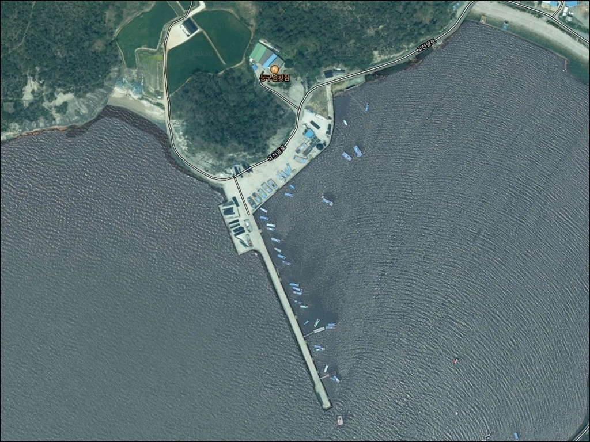
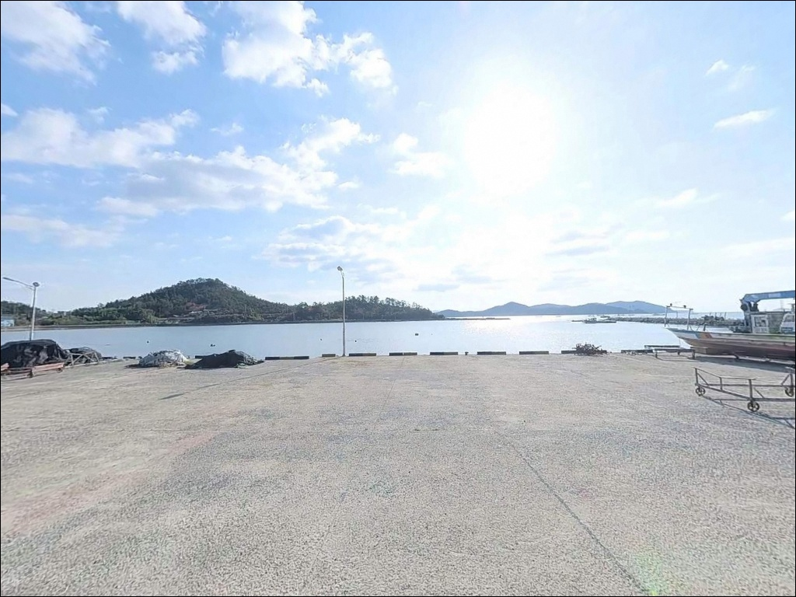
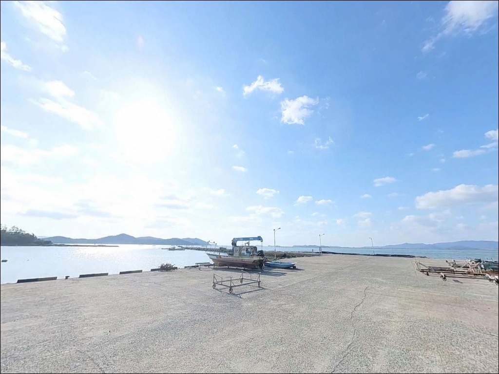
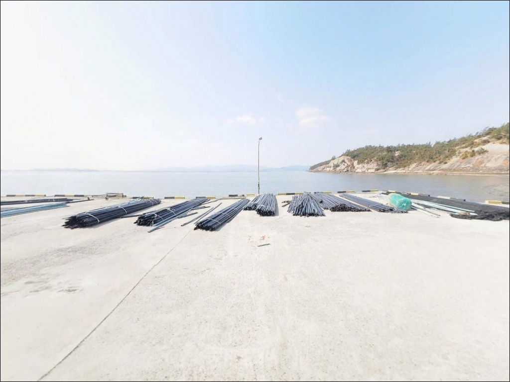
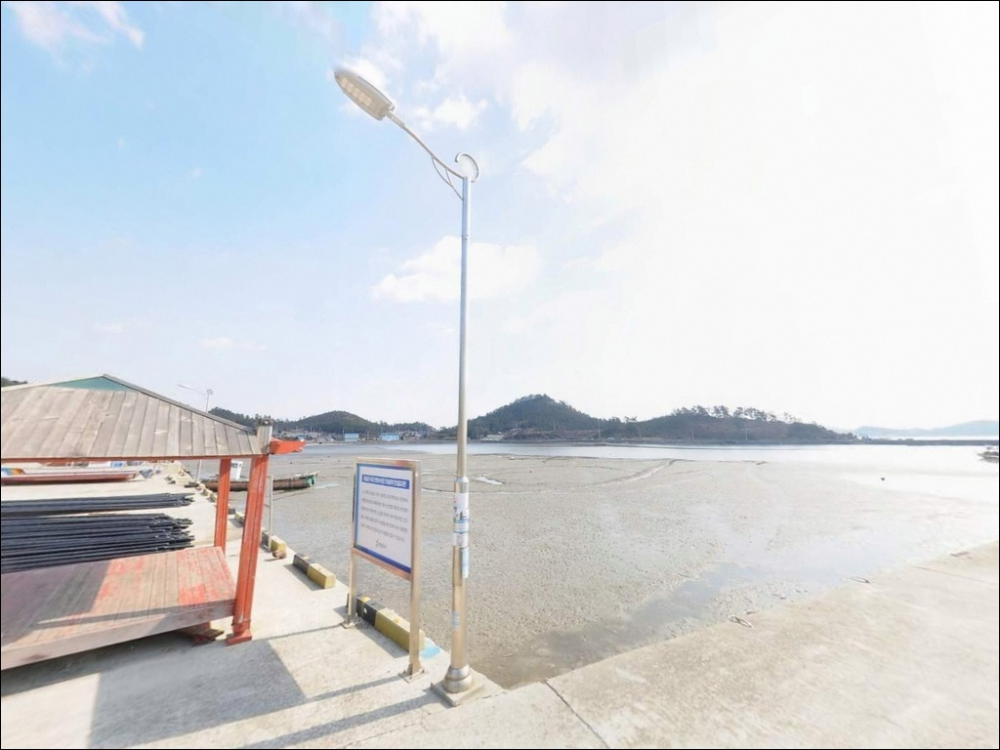
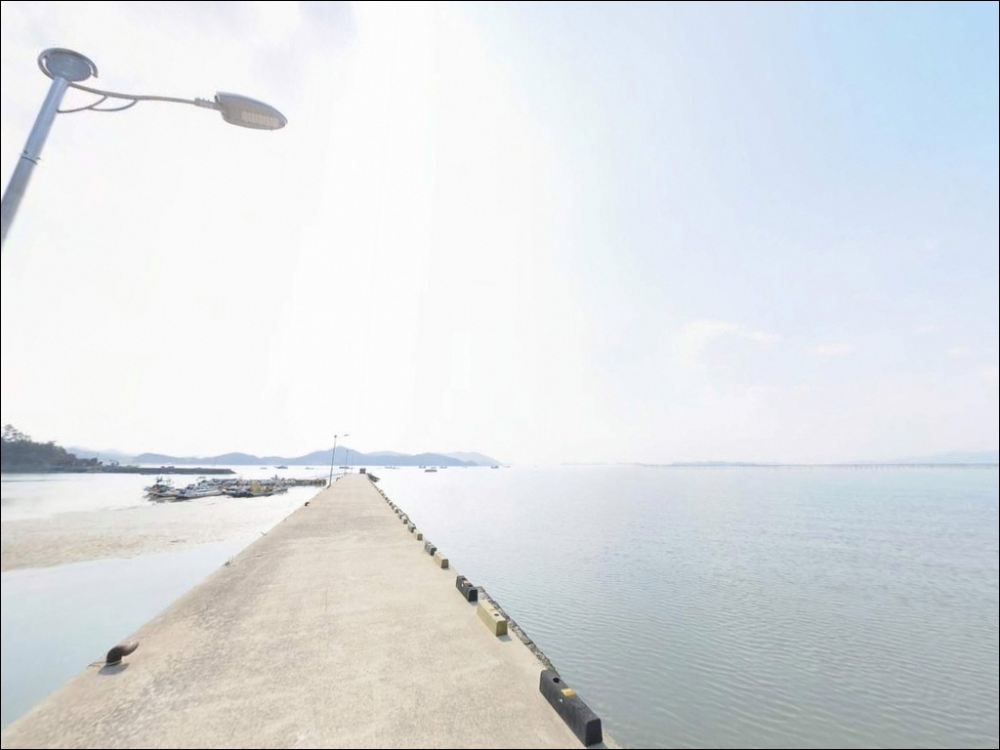
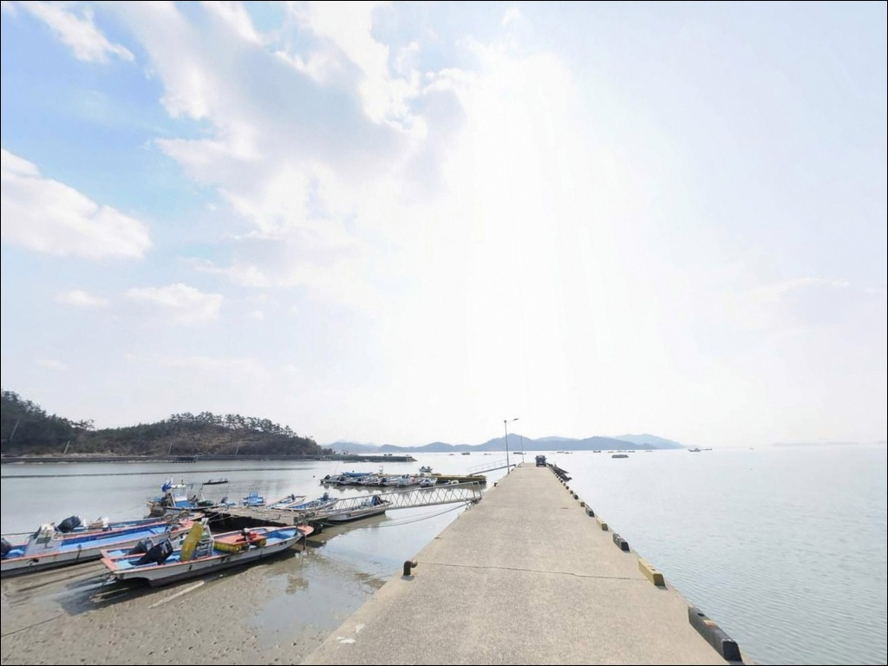
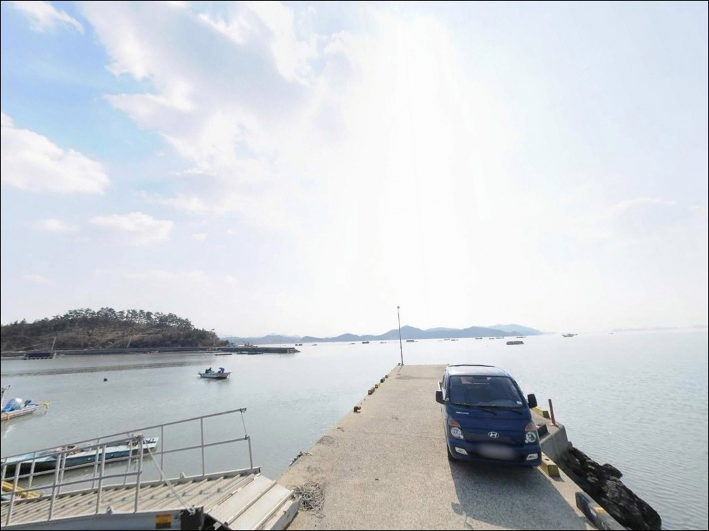
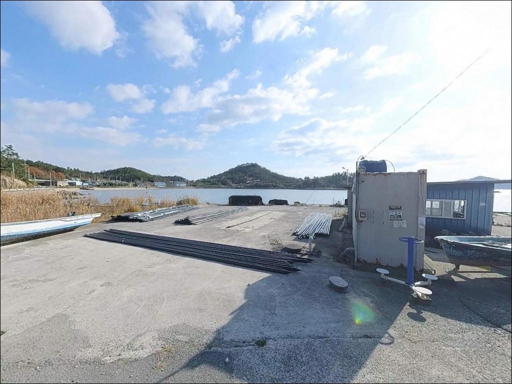

징의항, 징의도방파제, 전남 해남군 노을빛이 스며드는 차박, 낚시 겸용 감성 장소


포인트 안내
징의항(징의도방파제)
전남 해남군 황산면 한자리 1186-8
황산면 내만 쪽으로 들어오는 조류는
물때에 따라 수위 차이가 큽니다.
썰물 때 무턱대고 들어가면
뻘밭만 펼쳐진 내항 바닥을 마주하게 됩니다.
밀물 타이밍을 먼저 잡아야
원투 채비를 던질 자리가 생기는 구조입니다.
징의항은 원래 섬이었던 징의도가
간척으로 육지와 이어지면서
지금의 지방어항으로 자리 잡은 곳입니다.
방파제 207m, 물양장 230m 규모의
소형 어항 구조이며,
외해 노출이 적어 파고는 낮은 편입니다.
이 글은 황산면 징의항의
진입 동선, 지형 구조, 낚시 방식 적합성,
차박 체류 가능성에 집중합니다.
조황 단정이나 특정 어종 보장은
이 글의 범위에 포함되지 않습니다.

1. 진입 동선과 포인트 접근성
징의항 진입은 황산면 한자리 마을 도로를
따라 들어오는 방식입니다.
황산면 소재지에서 해안 쪽으로 빠지는 길은
농어촌 지방도 수준이며,
마을 안길로 들어서는 구간은
폭이 좁아지는 편입니다.
대형 SUV나 캠핑카 형태의 차량은
출발 전 위성지도로 마지막 구간 도로 폭을
미리 확인해 두는 편이 안전합니다.
소형~중형 차량 기준으로는
진입 자체에 큰 어려움은 없는 편이며,
항 입구 쪽 회차 공간은
어선 동선과 겹치지 않는 선에서 가능합니다.
주차는 선착장 초입 공터나
방파제 시작 지점 주변 도로변을
이용하는 방식이 일반적입니다.
어업 활동이 이루어지는 소형 어항 특성상
어선 계류 구역과 작업 동선은
처음부터 피해서 자리를 잡아야 합니다.

2. 차박 환경과 야간 체류 여건
징의항 일대는 한자리 어촌 마을에 인접해 있지만
민가 밀집도는 높지 않은 편입니다.
야간에는 외부 통행이 거의 없는 조용한 분위기이며,
내만 구조상 파도 소음도 적은 편이라
낚시 후 차 안에서 쉬어가기에
나쁘지 않은 환경입니다.
다만 소형 어항의 특성상
야간 조명 시설이 제한적입니다.
개인 헤드랜턴과 랜턴 장비는
낚시 중에도, 차박 중에도 필수이며,
주차 공간이 좁은 만큼
차박을 메인으로 삼기보다
낚시 후 간이 체류 형태로 접근하는 편이 현실적입니다.
내만 위치 특성상 바람 영향은
외항 방파제 포인트보다 적은 편입니다.
기상 변화가 심한 날은 조류 변화도 빠르게 오므로
체류 계획을 유연하게 잡아 두는 것이
이 포인트에 맞는 방식입니다.


3. 주변 편의시설 및 인프라 현황
징의항 선착장 바로 주변에는
편의점이나 식당이 없는 것으로 파악됩니다.
황산면 소재지 방향으로 이동하면
황산대형마트(황산면 소재, 06:00~23:00 운영)와
황산마트(황산면 남리)를 이용할 수 있습니다.
주유소는 황산면 원호리의 황산주유소와
일신리의 오일뱅크를 이용할 수 있습니다.
약국은 황산면 우항리의 광주약국이
지도상 확인됩니다.
면 단위 농어촌 지역 특성상
식수, 얼음, 채비 소품 등은
출발 전 모두 갖춰 두는 편이 안전합니다.
응급 상황 발생 시 해남종합병원까지
차량으로 15~20분 거리입니다.
비상약품과 연료는 여유 있게 준비해
진입하는 것이 기본입니다.

4. 진입 전 반드시 챙겨야 할 준비사항
징의항 방문에서 가장 먼저 확인할 것은 물때입니다.
황산면 일대는 내만 지형으로
간조와 만조 수위 차이가 큰 서해 특성이
그대로 나타납니다.
바다타임에서 황산면 기준 물때를
확인하고 밀물 타이밍에 맞춰
진입 시각을 결정하는 것이 기본 전략입니다.
뻘 저질 지형에서의 원투낚시는
채비 손실이 잦은 편입니다.
여분 봉돌과 바늘은 넉넉하게 준비하는 것이
이 포인트 구조에 맞는 준비 방식입니다.
야간 낚시를 겸할 계획이라면
헤드랜턴과 구명조끼는
반드시 챙겨야 합니다.
소형 어항은 어민들의 생업 공간입니다.
어선 계류 구역과 어구에는 절대 접촉하지 않으며,
자리는 항상 작업 동선 밖에 잡아야 합니다.
쓰레기는 되가져오는 것이
이 포인트를 유지하는 기본 매너입니다.

5. 지형 기반 낚시 여건 분석
징의항은 원래 섬이었던 징의도가 간척으로
육지와 이어지면서 형성된 어항입니다.
이 구조상 항 주변은
내만 특성의 뻘 저질 지형이 발달해 있으며,
수심은 얕은 구간이 많은 편입니다.
방파제 207m 기준으로 끝단 쪽으로 갈수록
수심이 조금씩 깊어지는 패턴을 보입니다.
밀물이 들어오는 타이밍에
항 입구 쪽으로 조류가 형성되는 구간이
주요 낚시 자리 역할을 합니다.
이 구간에서 원투 채비를 멀리 보내거나
찌낚시로 흘리는 방식이
이 지형 구조와 잘 맞는 공략법입니다.
반면 썰물이 빠지는 시간대에는
내항 쪽 바닥이 드러나는 구간이 생깁니다.
물때를 제대로 맞추지 않으면
낚시 자리 자체가 사라지는 상황이 오므로,
사전 조황 검색이 방문 전 필수 절차입니다.
출조 전에 황산면 징의항 조황 또는
해남 황산 망둥어 관련 정보를 먼저 확인해 두시기 바랍니다.


6. 징의항 지형에 어울리는 낚시 스타일
이 포인트에서 지형 조건과 가장 잘 맞는 방식은
원투낚시입니다.
내만 뻘 저질 구조에서
청갯지렁이 미끼를 달아 밀물 타이밍에
먼 곳으로 채비를 보내는 방식이
이 지형이 기대할 수 있는 가장 기본적인 공략입니다.
망둥어와 붕장어는 지형 특성상
가을철을 중심으로 기대해볼 수 있는 어종입니다.
릴찌낚시도 이 구조에 어울리는 방식입니다.
방파제 외항 초입에서
조류가 흐르는 방향으로 흘림 찌를 운용하면
감성돔과 숭어류가 반응하는 구간이
형성될 수 있습니다.
조류가 살아 있는 밀물 구간을
노리는 것이 이 방식의 핵심입니다.
방파제 발밑 또는 선착장 슬로프 주변에서는
짧은 장대로 처박기 낚시를 시도해볼 수도 있습니다.
이 구간은 붕장어나 망둥어가
은신하기 좋은 지형 조건이며,
야간 낚시 시 헤드랜턴 불빛에 반응하는 어종이
몰리는 경우도 있습니다.

7. 대안 포인트와 플랜 B 동선
징의항 여건이 여의치 않거나
물때가 맞지 않을 때의 첫 번째 대안은
황산면 옥동방파제입니다.
같은 황산면 해안선 안에 위치해 있어
이동 거리가 크지 않으며,
방파제 낚시 환경 자체는
비슷한 지형 패턴을 공유하고 있습니다.
조금 더 규모가 큰 환경을 원한다면
해남군 송지면 방향의
어란진항이 대안이 됩니다.
감성돔과 다양한 어종이 기대되는 방파제이며,
진입과 주차 여건이 상대적으로 넓어
징의항과 묶어서 동선을 짜기 좋은 포인트입니다.
차박 장소로서 더 여유로운 공간이 필요하다면
해남읍 방면으로 이동하는 것이
현실적인 대안입니다.
황산면 인근에서는 별도로 확인된
차박 특화 공간이 없어,
도리포해변 인근 방향을
함께 검토해 볼 수 있습니다.

아직 덜 알려진 황산면 내만 포인트,
먼저 물때를 확인하고 출발하십시오
원투낚시나 처박기 낚시를 즐기는 낚시인이라면
징의항의 뻘 저질 내만 구조는
익숙하게 다룰 수 있는 지형입니다.
조황 정보가 많지 않아
직접 발품을 팔아야 하는 탐색형 포인트지만,
그만큼 사람이 적고 조용한 낚시를
기대할 수 있는 곳입니다.
반면 물때 계산 없이 썰물 때 도착하거나
사전 준비 없이 찾아가면
낚시 자리가 사라지거나
편의시설 부재로 당혹스러운 상황이 생길 수 있습니다.
물때 확인, 채비 충분 준비, 완전 자급 체제,
이 세 가지를 갖추고 간다면
황산만 내만의 조용한 낚시 출조가 될 수 있는 포인트입니다.
소형 어항 특성상 차박 공간은 넉넉하지 않지만,
낚시를 마치고 조용한 내만 분위기 속에서
하룻밤을 보내고자 하는 낚시인이라면
불편함을 감수할 만한 여건이 갖춰져 있는 곳이기도 합니다.